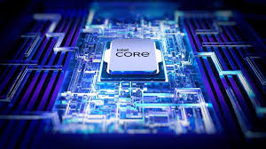
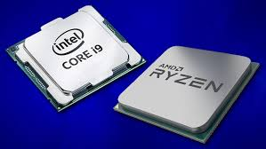
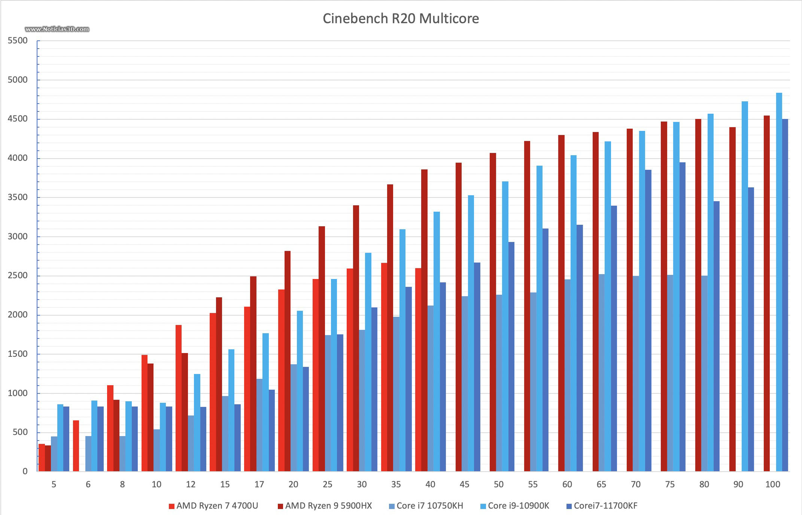
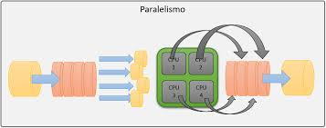
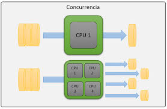
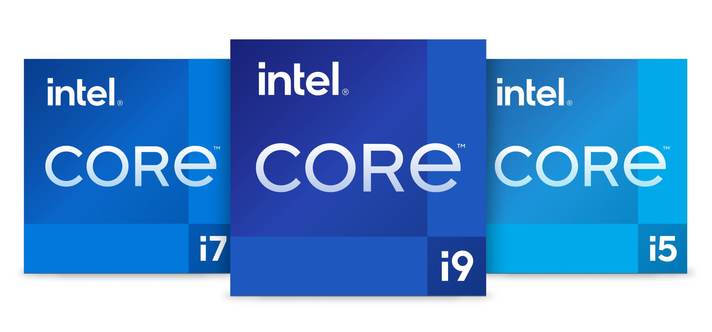

Bienvenido a esta página educativa sobre los procesadores. A continuación, exploraremos diversos aspectos esenciales sobre su funcionamiento y evolución de manera que podamos comprender su arquitectura.
La arquitectura de un procesador define su estructura interna y funcionamiento. Los componentes principales son la Unidad de Control, que interpreta instrucciones; la Unidad Aritmético-Lógica (ALU), que realiza operaciones matemáticas y lógicas; y los registros, que almacenan datos temporales. Además, el procesador incluye una memoria caché para acceder rápidamente a datos y una interfaz con el bus del sistema para comunicarse con otros componentes.

Existen diversos tipos de procesadores, clasificados según su uso y arquitectura. Entre ellos están: Procesadores de propósito general: Usados en PCs y laptops, como los Intel Core o AMD Ryzen. Procesadores embebidos: Integrados en dispositivos como microcontroladores o electrodomésticos. Procesadores gráficos (GPU): Especializados en procesamiento paralelo para gráficos y cálculos científicos. Procesadores móviles: Diseñados para smartphones y tablets, como los Apple A-series o Snapdragon.

El rendimiento de un procesador se mide por su capacidad de ejecutar instrucciones por segundo. Factores como la velocidad del reloj (GHz), el número de núcleos, la eficiencia energética, y la arquitectura interna influyen en su desempeño. También es importante la memoria caché y la compatibilidad con tecnologías como la ejecución fuera de orden o la predicción de saltos.

El paralelismo y la concurrencia permiten ejecutar múltiples tareas al mismo tiempo. El paralelismo se refiere a la ejecución simultánea de instrucciones en distintos núcleos, mientras que la concurrencia permite gestionar múltiples procesos que avanzan de forma intercalada. Estas técnicas son esenciales para aprovechar al máximo los procesadores multinúcleo y mejorar el rendimiento en aplicaciones modernas.


Los procesadores modernos incorporan tecnologías avanzadas como inteligencia artificial, aprendizaje automático y aceleradores específicos. Las tendencias actuales incluyen la miniaturización de transistores (nanómetros), la arquitectura híbrida (núcleos de alto y bajo consumo), y el uso de chiplets. También se busca eficiencia energética, integración con GPUs, y seguridad mediante cifrado a nivel de hardware.

Fuente: Información sobre procesadores